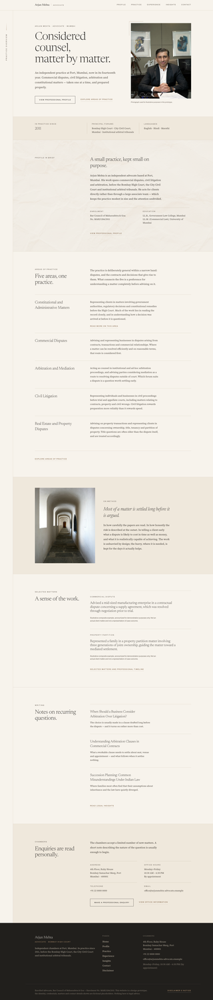
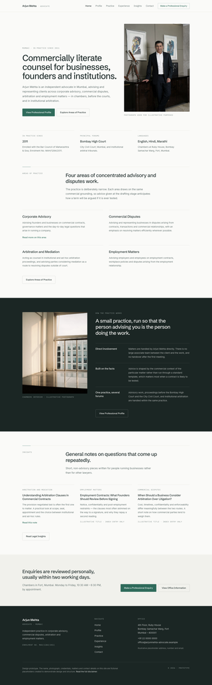
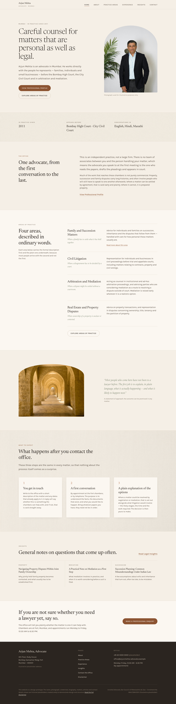

Prototype 01
Quiet Authority
Restrained, editorial, senior-litigator voice. Ivory, stone and bronze.
Open prototype →
Prototype 02
Contemporary Counsel
Modern, business-literate, ledger-grid structure. Mineral green and charcoal.
Open prototype →
Prototype 03
Human-Centered Advocate
Warm, plainly-spoken, formal/plain-language pairing. Sand, clay and sage.
Open prototype →Presentation decks (PDF)
For an offline leave-behind or a printed reference, each prototype also has a curated PDF deck (concept, palette, typography, sitemap and page views), plus a side-by-side comparison.
All three prototypes are design demonstrations only. The name, photograph, credentials,
biography, matters, articles and contact details shown throughout are fictional
placeholders created solely to demonstrate design and structure — see each prototype's
Disclaimer page for the full notice. These pages are marked noindex
and are not intended to be found via search.